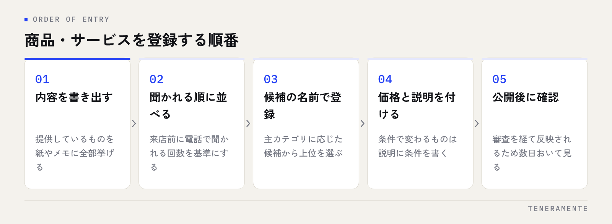

Googleビジネスプロフィールの商品・サービス機能は、「何を、いくらで扱っている店舗か」を検索した人に先に答えるための枠です。営業時間や写真を整えたあとに手が止まりやすい機能ですが、埋めておくと電話での確認が減り、比較の段階で外れにくくなります。使う順番と、埋める内容の決め方を整理します。
📌 この記事の結論
商品とサービスは別の枠で、どちらが使えるかはカテゴリで決まります。先にサービスで扱う内容の一覧を作り、写真で選ばれる商材だけを商品に登録します。順番は「よく聞かれる順」です。
01商品とサービスは、同じ枠ではない
この2つは名前が似ているため混同されますが、プロフィール上での見え方が違います。
サービスは、提供している内容を名前・価格・説明で並べる枠です。写真は付きません。カット、車検、ハウスクリーニング、相談対応といった「作業」を扱う店舗向けの形です。
商品は、写真付きのカードとして並ぶ枠です。商品名・価格・説明に加えて、写真と、詳細ページへのリンクを付けられます。物販のように見た目が判断材料になるものを扱う場合に向いています。飲食店の場合は、これらとは別に「メニュー」の枠が用意されています。
つまり、同じ内容を両方に重複して登録する機能ではありません。扱っているものの性質で、どちらに書くかが決まります。
02自分の店舗でどちらが出るかを先に確認する
使える枠は、プロフィールに設定した主カテゴリによって変わります。管理画面に項目が出てこない場合は、そのカテゴリでは用意されていないということなので、無理に探す必要はありません。
| 店舗の性質 | 主に使う枠 | 写真 | 書く内容の例 |
|---|---|---|---|
| 作業・施術・相談を提供する | サービス | 付かない | 施術名、対応内容、相談の種類 |
| 商品を売る（物販） | 商品 | 付く | 商品名、取り扱いブランド |
| 飲食を提供する | メニュー | 付く場合あり | 料理名、価格 |
どの枠が出るかは、カテゴリを変えると変わります。ただしカテゴリは枠を増やす目的で選ぶものではありません。選び方はGoogleビジネスプロフィールのカテゴリの選び方に分けて書いているので、先にそちらで主カテゴリを確定させてから、この機能に進んでください。
03サービスは「候補にある名前」から埋める
サービスを追加しようとすると、主カテゴリに応じた候補の名前がいくつか提示されます。まずはこの候補のうち、実際に提供しているものを選ぶのが先です。
候補の名前は、同じ業種の店舗で広く使われている言い方になっています。自店独自の呼び方よりも、検索する人が使う言葉に近い形です。「極上リラックスコース」のような独自名は、候補を埋めたあとにカスタムサービスとして足すほうが、意味が伝わります。
価格は、固定の金額か、価格を表示しない形を選べます。金額が条件で変わるものは、無理に1つの数字を入れず、説明のほうで条件を書くほうが誤解が出ません。
先に一覧を紙に書き出す
管理画面で思いつく順に追加していくと、抜けと重複が出ます。提供している内容を先に紙やメモに全部書き出し、「よく聞かれる順」に並べ替えてから入力するほうが早く終わります。並べ替えの基準は、来店前に電話で聞かれる回数です。
04商品を使うと効くのは、写真で選ばれる商材
商品の枠は写真付きで並ぶため、見た目が判断材料になるものほど向いています。逆に、写真にしても違いが伝わらない内容を無理に商品として登録すると、カードが並ぶだけで情報が増えません。
登録するなら、看板になるものから数点に絞るほうが見やすくなります。全在庫を載せる機能ではありません。価格帯が分かる数点と、取り扱っている種類が分かる数点があれば、「ここで買えるのか」という疑問には答えられます。
写真は、商品そのものが正面から分かるものを使います。撮り方の基本はプロフィールに載せる写真の選び方と同じで、明るさと水平が守れていれば、スマホで撮ったもので足ります。
05登録の順番は、よく聞かれる順
一度にすべてを埋めようとすると途中で止まります。次の順番で進めてください。

- 提供している内容を書き出す（紙でもメモアプリでも可）
- 来店前に聞かれる回数で並べ替える
- 候補にある名前で上位のものから登録する
- 価格と説明を付ける（条件で変わるものは説明に条件を書く）
- 公開後に表示を自分で確認する
5番目を飛ばさないでください。登録した内容は審査を経て反映されるため、すぐには出ないことがあります。数日おいてから、スマホで自店のプロフィールを開き、意図した枠に意図した順で並んでいるかを見てください。
06説明文に書くこと、書かないこと
説明に書くのは、その内容を選ぶときに必要な事実です。所要時間、含まれるもの、対象になる人、持ち物の有無。この4つが入っていれば、問い合わせの電話は減ります。
反対に、効果や成果をうたう表現、他店との比較、連絡先や外部サイトのURLは入れないでください。ポリシーに触れると審査で外れますし、通ったとしても、説明の枠は宣伝文を読む場所として見られていません。
説明文は、読ませる文章ではなく答え合わせの材料です。1つのサービスにつき、迷いが消える事実を2〜3個入れる。これだけで役目は果たします。
07登録したあとに起きる、3つのずれ
埋めた直後は正しくても、時間が経つと実態とずれます。起きやすいのは次の3つです。
1つ目は、価格の据え置きです。自店サイトやメニュー表は直したのに、プロフィール側が古い金額のまま残る。これは来店時のトラブルにつながります。
2つ目は、提供をやめた内容が残ることです。扱いをやめたサービスが並んでいると、その目的で来た人の来店が無駄になります。
3つ目は、自店サイトとの食い違いです。同じサービスの名前が違う、含まれるものの説明が違う。見比べた人の判断が止まります。
価格を変えたときの手順を決めておく
料金改定のときに直す場所を、あらかじめ一覧にしておいてください。店内の表示、自店サイト、Googleビジネスプロフィール、予約ページ。直す場所が決まっていないと、どこかが必ず残ります。月1回の見直し項目は[Googleビジネスプロフィールの月次チェックリスト](2026-06-28-gbp-monthly-checklist.html)にまとめています。
商品やサービスを登録すると順位は上がりますか？
管理画面に「商品」や「サービス」の項目が出てきません
全部の商品を登録したほうがよいですか？
08まとめ：枠を埋めるのは、問い合わせを減らすため
Googleビジネスプロフィールの商品・サービス機能は、扱っている内容を検索した人に先に伝える枠です。サービスは名前・価格・説明、商品は写真付きのカード。どちらが使えるかはカテゴリで決まるので、まず管理画面で確認してください。
進め方は、提供内容を書き出す、よく聞かれる順に並べ替える、候補にある名前から登録する、説明に事実を2〜3個入れる、公開後に自分の目で確認する。あとは料金改定と取り扱いの変更のときに直す。埋める目的は、来店前の確認を電話からプロフィールへ移すことです。
TENERAMENTEなら、カテゴリの確定からサービス名の洗い出し、説明文の型づくり、料金改定時に直す場所の一覧づくりまで、店舗の運用に合わせて設計します。何を登録するかを担当者が毎回考えずに済み、更新が止まらない形になります。MEO対策の進め方をご覧いただいたうえで、お問い合わせからお気軽にご相談ください。